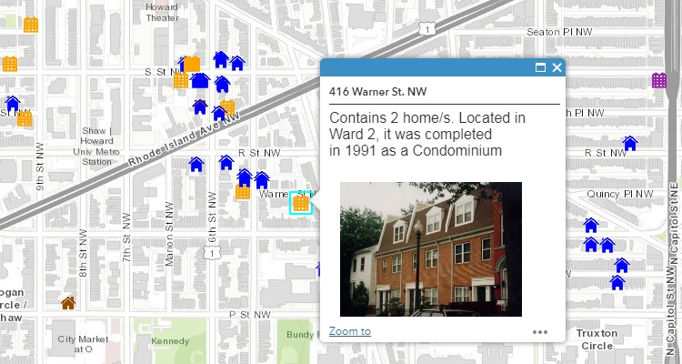
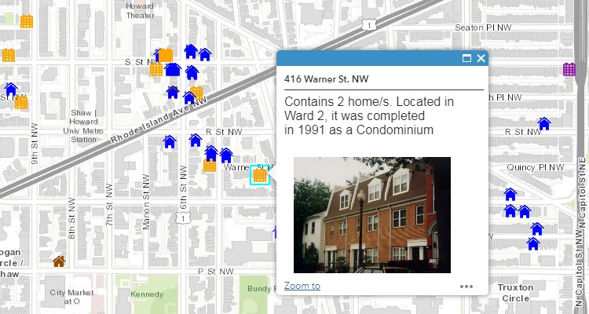

Especialista GIS
Alexandria, VA
jd.franco.caballero@gmail.com
703-401-1926
Experiencia
Plataforma ArcGIS
HTML+CSS
Javascript
Administración de Bases de Datos
Idiomas
Inglés
Español
• Aceleración del proceso de creación de mapas mediante el desarrollo de diseños cartográficos, formatos y estándares de diseseño .
• Disminución del tiempo de entrega de datos mediante la creación de bases de datos SQL que contienen datos de terceros accesibles a través de Power BI
• Reducción de errores humanos al refinar los flujos de trabajo de mapas con la adición de scripts automatizados
• Implementación de la tecnología de ArcGIS Server para actualizar informes departamentales en papel a aplicaciones web y para desarrollar y mantener herramientas de mapas web
• Diseño y administración del sitio web del equipo de Investigación y Evaluación
• Entrenamiento de nuevos empleados en la ejecución y entrega de mapas
• Ayuda tanto a clientes como a compañeros con solución de problemas y asistencia técnica
• Realización de BAS (Building & Address Survey)
• Replanteos de edificios para la planificación de las infraestructuras de fibra óptica.
• Realización de diseños de redes de Fibra Óptica utilizando sistemas de información geográfica para el despliegue de redes FTTH (Telefónica y Jazztel)
• 280 horas con el cliente (Policia Nacional) para acualizar cartografía y bases de datos y desarrollar aplicaciones SIG
Ingeniería Técnica en Topografía - Proyecto Final de Carrera
Esri Máster GIS, Sistemas de información geográfica - Proyecto Final de Máster
Técnico programador en JAVA, ASP.NET y Oracle


Analisis HOLC
Este informe muestra las consecuencias de la historia mas importante subyaciente en las ciudades de Estados Unidos hoy en dia: la historia del redlining
Coste del suelo en la Ciudad de Alexandria, Virginia
Una visión general del coste del suelo en la Ciudad de Alexandria, Virginia.
Desiertos Bancarios en Estados Unidos
Una visión general del cierre de sucursales bancarias desde 2008 hasta 2017 y su impacto.
Panel de Préstamos para compra de vivienda
Panel de Préstamos para compra de vivienda.
 

Mapa de propiedades de MANNA
Desde su fundación en 1982, MANNA ha fomentado casi 1200 unidades de vivienda asequible. En este mapa puedes encontrar proyectos que MANNA ha generado para ayudar a miembros marginados de la comunidad de DC a ascender en la escalera económica.
Huracán Harvey
Houston Texas está sufriendo inundaciones catastróficas como resultado del huracán Harvey, el cual tocó tierra el viernes 25 de agosto de 2017. Este es el tercer año consecutivo que Houston ha tenido inundaciones en áreas de provabilidad de inundación de 1 entre 500 al año.
Huracán Irma
Este mapa web muestra los continuos fuertes vientos e inundaciones generadas por la subida del nivel del agua y su relación con población vulnerable.
Mapas lado a lado
Esta app compara lado a lado sucursales bancarias, préstamos de compra de vivienda, préstamos para pequeñas empresas e información de distritos del Congreso.
Massachusetts
Préstamos FHA en Massachusetts.
Además de ser un especialista GIS senior, soy español y orgulloso de ello. Nací y crecí en Navalmoral de la Mata, un pueblo pequeño cerca de la frontera entre España y Portugal, y fui a la universidad en Madrid. Como capital de españa y ciudad más grande del país, Madrid tiene el el tercer mayor PIB de la Unión Europea y contribuye de muchas formas con tendencias mundiales en política, medios, moda, cultura, entretenimiento y mucho más. Habiendo vivido ya casi tres años en los Estados Unidos con mi mujer americana, he podido conocer gente de muchos países diferentes y disfruto mucho aprendiendo y explorando sus culturas y tradiciones.
"GIS es una forma de tecnología de mapas digitales. Parecido a Google Earth, pero mejor."
Arnold Schwarzenegger en la Conferencia de Tecnología del Gobierno de 2008.
Pongámonos en contacto y hablemos sobre próximos proyectos